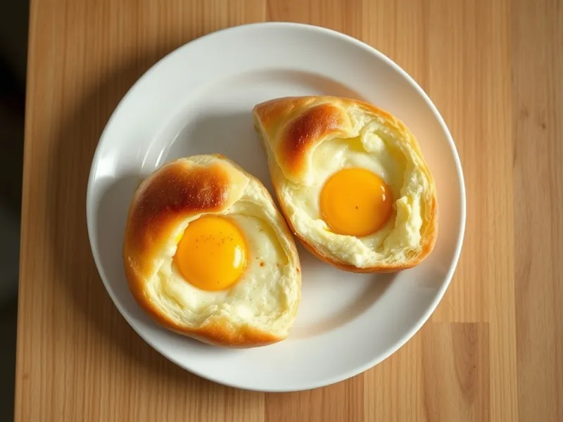

Хачапури из батона с яйцом в духовке
Лодочки из батона с сулугуни и яйцом, как ленивые хачапури по-аджарски
25 мин2 порц.657 ккал на порциюБ 29 · Ж 33 · У 60Кавказская кухня
Открыть в приложении: порции, таймеры, список покупок
Продукты на 2 порц.
- Хлеб белый8 шт
- Сулугуни120 г
- Сметана 20%2 ст. л.
- Яйцо куриное2 шт
- Сливочное масло10 г
Как готовить
- Разогрейте духовку до 200 °C (сильный жар). Разрежьте батон пополам вдоль и выньте часть мякиша, чтобы получились лодочки с бортиками 1 см.
- Натрите сулугуни и смешайте со сметаной.
- Наполните лодочки сыром, сделайте ложкой углубление в центре. Выложите на противень с пергаментом.
- Запекайте при 200 °C (сильный жар) 8 минут, пока сыр не расплавится и батон не зарумянится.
- Аккуратно вбейте в углубление каждой лодочки по яйцу и запекайте ещё 5-6 минут, пока белок не станет белым, а желток останется жидким.
- Положите сверху по кусочку сливочного масла и сразу подавайте.
Совет. Вынутый мякиш не выбрасывайте: подсушите его на гренки или сухари. Если сулугуни нет, подойдёт смесь моцареллы и брынзы.